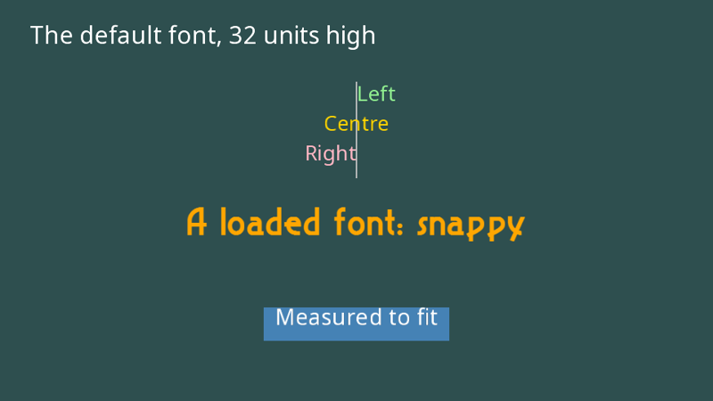

Text
yak2D draws text with bitmap fonts: each character is a small image, and a string is drawn as a row of textured rectangles on a draw stage. A font is built in, and you can load your own.

Drawing a string
DrawString() submits a string to a draw stage, like any other drawing:
public override void Drawing(IDrawing draw, IFps fps, IInput input, ICoordinateTransforms transforms,
float secondsSinceLastDraw, float secondsSinceLastUpdate)
{
// The built in font (Noto Sans) is used when no font is given
draw.DrawString(_drawStage, CoordinateSpace.Screen, "The default font, 32 units high", Colour.White,
32.0f, new Vector2(-440.0f, 230.0f), TextJustify.Left, 0.5f, 0);
// The position's y is the TOP of the text. x is the left edge, centre or right edge depending on justification
var y = 150.0f;
draw.DrawString(_drawStage, CoordinateSpace.Screen, "Left", Colour.LightGreen, 28.0f, new Vector2(0.0f, y), TextJustify.Left, 0.5f, 0);
draw.DrawString(_drawStage, CoordinateSpace.Screen, "Centre", Colour.Gold, 28.0f, new Vector2(0.0f, y - 40.0f), TextJustify.Centre, 0.5f, 0);
draw.DrawString(_drawStage, CoordinateSpace.Screen, "Right", Colour.LightPink, 28.0f, new Vector2(0.0f, y - 80.0f), TextJustify.Right, 0.5f, 0);
draw.Helpers.DrawLine(_drawStage, CoordinateSpace.Screen, new Vector2(0.0f, y + 10.0f), new Vector2(0.0f, y - 120.0f), 2.0f, Colour.Gray, 0.6f);
// A loaded bitmap font. yak2D picks the closest size it has and scales it
draw.DrawString(_drawStage, CoordinateSpace.Screen, "A loaded font: snappy", Colour.Orange,
56.0f, new Vector2(0.0f, -30.0f), TextJustify.Centre, 0.5f, 0, _snappy);
// Measuring text, here to draw a box that fits it. The letters hang down from the top position,
// with most of the glyph within about 0.2 to 0.9 of the font size below it
var message = "Measured to fit";
var size = 30.0f;
var top = new Vector2(0.0f, -150.0f);
var width = draw.MeasureStringLength(message, size);
draw.Helpers.DrawColouredQuad(_drawStage, CoordinateSpace.Screen, Colour.SteelBlue,
top - new Vector2(0.0f, 0.55f * size), width + 30.0f, 1.5f * size, 0.6f);
draw.DrawString(_drawStage, CoordinateSpace.Screen, message, Colour.White, size, top, TextJustify.Centre, 0.5f, 0);
}
| Parameter | Meaning |
|---|---|
stage |
The draw stage to add the text to. |
target |
CoordinateSpace.Screen for HUDs and menus, World for labels that move with the world. |
text |
The string. \n starts a new line; \t moves on by one font size. |
colour |
The text colour. |
fontSize |
The height of the text, in the same units as everything else (screen or world units, not pixels). |
position |
Where the text goes. Y is the top of the text. X is the left edge, centre or right edge, depending on justify. |
justify |
TextJustify: Left, Centre or Right. |
depth, layer |
Drawing order, as for any draw request. Give text a lower depth or higher layer than whatever it sits on. |
font |
An IFont you loaded, or leave it out (or null) for the built-in font. |
useKerningsWhereAvaliable |
Use the font's kerning information (spacing between particular pairs of letters) if it has any. |
Characters that the font does not contain are drawn as ?.
Note
Centre and right justification measure the whole string, so for text with several lines (\n), only left justification lines every row up correctly. For centred multi-line text, draw each line separately.
Measuring text
MeasureStringLength() returns how wide a string will be at a given size (the same method is on IFonts). Use it to fit boxes round text, or to lay out text yourself.
The built-in font
When no font is given, yak2D uses its built-in font, Noto Sans, which has bitmap sizes from 6 to 256. Whatever size you ask for, the nearest bitmap size is used and scaled, so it stays sharp at any size.
Loading your own fonts
yak2D reads fonts in the AngelCode BMFont text format: a .fnt description file plus one or more .png "page" images containing the characters. Many free tools produce this format:
Choose the text .fnt format (not XML or binary) and PNG pages.
A font can have several sizes, each with its own .fnt file. Name the files <name>_<size>.fnt and put them, with their page images, in your font folder:
Fonts/
├── snappy_38.fnt
├── snappy_38_0.png
├── snappy_38_1.png
├── snappy_64.fnt
├── snappy_64_0.png
└── ...
Then load the whole family by its name:
public override bool CreateResources(IServices yak)
{
_drawStage = yak.Stages.CreateDrawStage();
_camera = yak.Cameras.CreateCamera2D(960, 540);
// Loads every Fonts/snappy_*.fnt file (here snappy_38.fnt and snappy_64.fnt) and their page textures
_snappy = yak.Fonts.LoadFont("snappy", AssetSourceEnum.Embedded);
return true;
}
LoadFont() loads every .fnt file whose name starts with the name you give, plus the page images each one refers to. When drawing, the size closest to the requested size is used. Include a larger size if you draw text big, as scaling a small bitmap up makes it blurry.
Warning
Font file names must not contain spaces. If no matching .fnt files can be found, LoadFont() throws a Yak2DException. Embedded fonts are affected by the same assembly name rule as textures.
Fonts are resources: load them in CreateResources(), and destroy them with IFonts.DestroyFont() if you no longer need them.
Tips
- For a HUD, use a separate draw stage and a camera that never moves, rendered after the game with a depth clear in between (as the Yak Run tutorial does).
- Each character is one draw request. Hundreds of strings per frame are fine; for very large amounts of static text, consider drawing it once to a render target and drawing that as a texture.
- Text is ordinary drawing, so it can be rotated by the camera, have effects applied, and so on.
See also
- Sample: Draw_FontExample
- Full example code: TextAndCameras.cs (
TextExample)